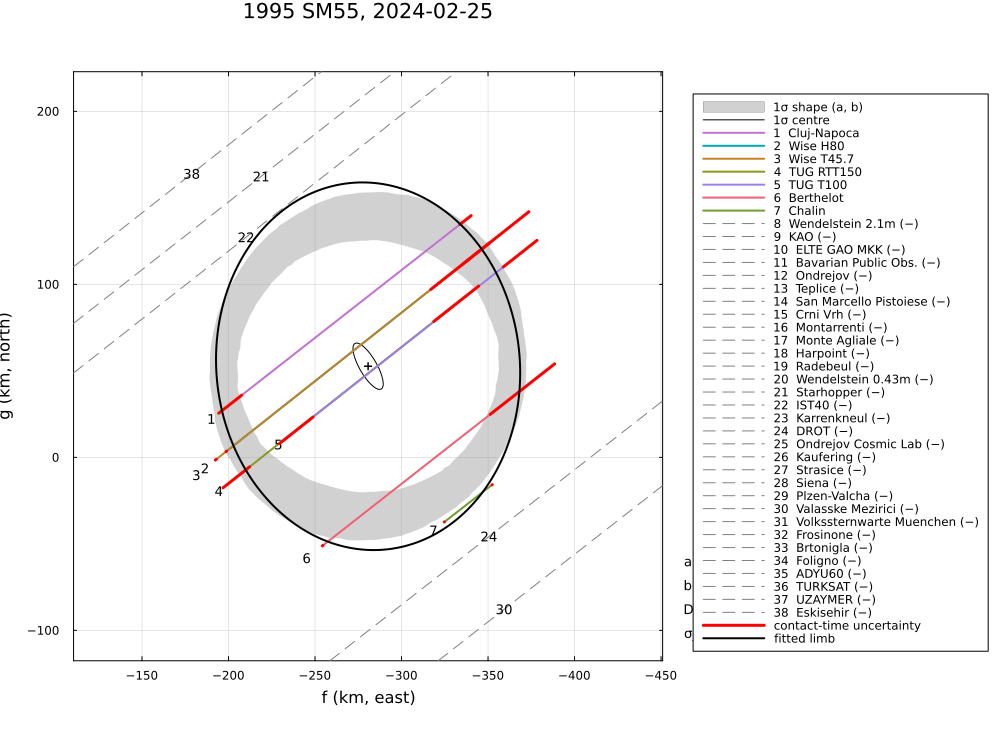
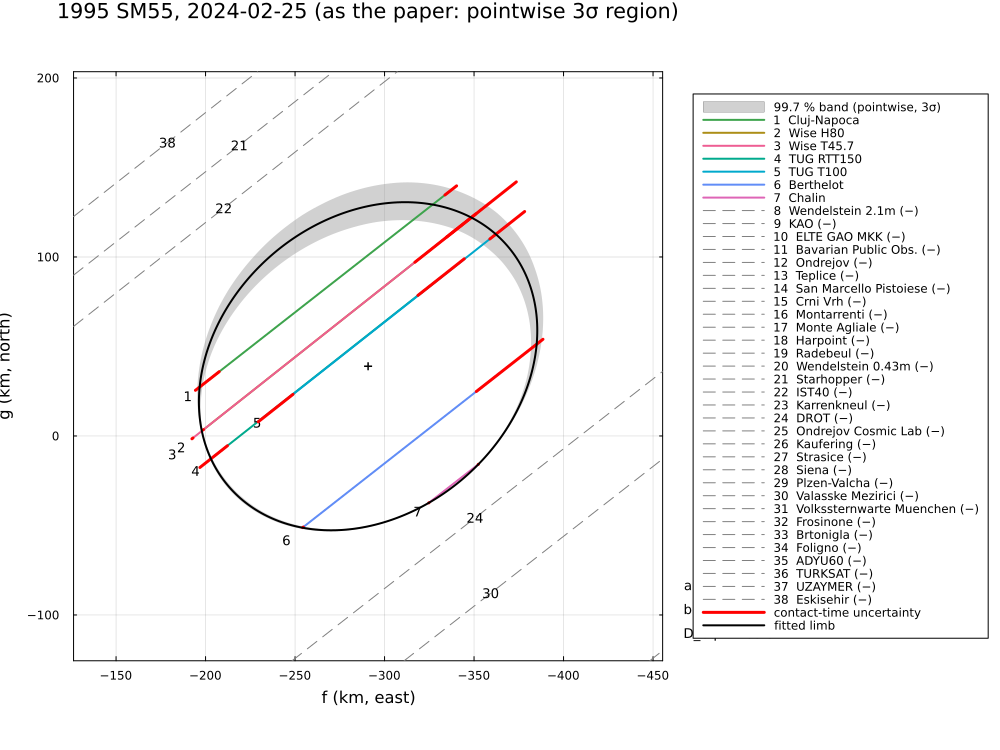
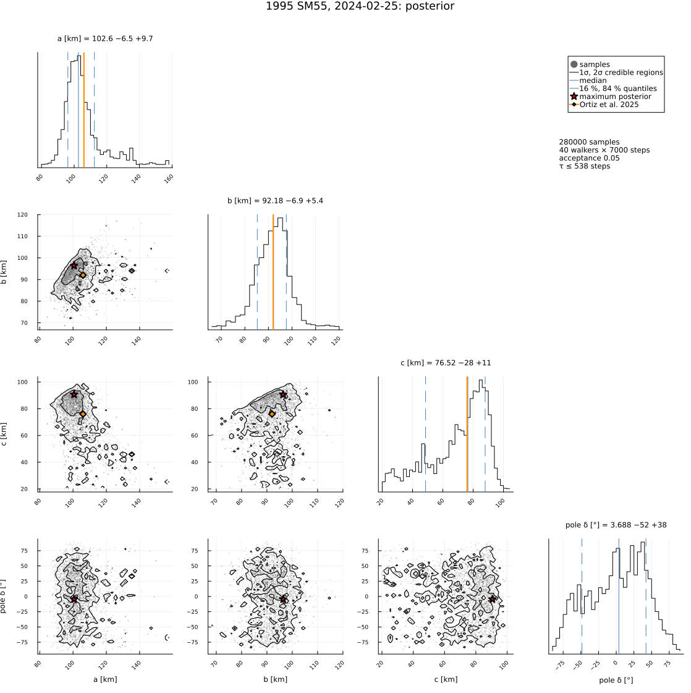

1995 SM55, 2024 February 25
The stellar occultation by (24835) 1995 SM55 on 2024 February 25, reduced from the published timings of Ortiz et al. (2025), A&A 703, A147, "A high geometric albedo and small size for the Haumea cluster member (24835) 1995 SM55 determined from a stellar occultation and photometric observations": seven positive chords from five sites and 31 negative chords.
The example covers:
- the limb fit, its posterior, the area-equivalent diameter and the geometric albedo (0.80 in the paper);
- the astrometry, which matches the published position to 0.1 mas;
- the 3-D ellipsoid from the occultation, the low light-curve amplitude and the rotational phase.
The two Wise timings are inconsistent by 20σ, so the published χ²/dof = 1.55 cannot be reproduced with the published errors. A limb allowance σ_limb absorbs them.
The data are transcribed in examples/data/1995sm55_20240225.jl, with the stored JPL Horizons ephemeris, so the script runs offline:
julia --project=. examples/1995sm55_2024.jl [output_dir] (default: examples/output/1995sm55_2024)The code is not run when the manual is built. The output after each section is that of the last run of examples/1995sm55_2024.jl, stored in examples/output/1995sm55_2024/output.txt.
using Occultations, Random, Printf, Statistics
using Plots
import CairoMakie # saves the GeoMakie maps (Makie figures)
include(joinpath(@__DIR__, "standard_figures.jl"))
include(joinpath(@__DIR__, "data", "1995sm55_20240225.jl"))
out = length(ARGS) >= 1 ? ARGS[1] : mkpath(joinpath(@__DIR__, "output", "1995sm55_2024"))
rng = MersenneTwister(2024)
P = SM55_PAPER
q(x) = quantile(x, [0.15865525393145707, 0.5, 0.8413447460685429])
pm(x) = (v = q(x); @sprintf("%.1f -%.1f +%.1f", v[2], v[2] - v[1], v[3] - v[2]))Event and geometry (paper values in parentheses)
ev = sm55_event()
D = ev.ca.dist_km
@printf("%d positive and %d negative chords; distance %.2f au, shadow velocity %.2f km/s (%.2f),\n",
count(ispositive, ev.chords), count(isnegative, ev.chords), D / 1.495978707e8, ev.ca.vel, P.velocity)
@printf("stellar diameter %.2f km (0.6), Fresnel scale %.2f km at 0.7 µm (%.2f)\n",
apparent_diameter(ev.star, D), fresnel_scale(0.7, D), P.fresnel_km_700nm)7 positive and 31 negative chords; distance 37.83 au, shadow velocity 10.42 km/s (10.42),
stellar diameter 0.63 km (0.6), Fresnel scale 1.41 km at 0.7 µm (1.32)Apparent limb (Table 3)
row(label, r) = @printf("%-34s a′ = %6.2f ± %4.2f b′ = %5.2f ± %4.2f φ′ = %5.1f ± %3.1f D_eq = %6.2f ± %4.2f χ²/dof = %6.2f\n",
label, r[:equatorial_radius]..., r[:semi_minor_axis]..., mod(r[:position_angle][1], 180),
r[:position_angle][2], 2r[:equivalent_radius][1], 2r[:equivalent_radius][2], reduced_chi2(r))
@printf("%-34s a′ = %6.2f ± %4.2f b′ = %5.2f ± %4.2f φ′ = %5.1f ± %3.1f D_eq = %6.2f ± %4.2f χ²/dof = %6.2f\n",
"published (N = 14)", P.a..., P.b..., P.position_angle..., P.D_eq..., P.chi2_pdf)
rr = fit_limb(ev; residual=:radial, rng=rng)
rc = fit_limb(ev; residual=:chord, rng=rng)
row("radial residuals (as SORA)", rr)
row("residuals along the chords", rc)
println("normalised contact residuals of the radial fit (immersion, emersion):")
names = [c.name for c in ev.chords if ispositive(c)]
for (k, n) in enumerate(names)
@printf(" %-12s %+6.1f %+6.1f\n", n, rr.residuals[2k-1], rr.residuals[2k])
end
println("The two Wise telescopes stand at the same place, but their immersions differ by 0.75 s")
println("(18:17:41.091 ± 0.014 s vs 18:17:40.344 ± 0.035 s, i.e. 20σ): with the published timing")
println("errors no ellipse reaches χ²/dof ≈ 1.5. A limb allowance σ_limb absorbs such errors:")
ra = fit_limb(ev; residual=:radial, σ_limb=:auto, rng=rng)
row(@sprintf("radial, σ_limb = %.1f km", ra.problem.σ_limb), ra)
println("closest negative chords:")
for x in first(check_negative_chords(ra), 3)
@printf(" %-22s %s, %5.1f km from the limb\n", x.chord, x.conflict ? "CROSSES THE LIMB" : "consistent", x.distance)
end
println("(the fitted centre, ", round.((ra[:center_f][1], ra[:center_g][1]); digits=1),
" km, refers to the current JPL orbit; the paper's (303.8, −787.8) km to NIMA v10)")published (N = 14) a′ = 104.30 ± 0.40 b′ = 83.50 ± 0.50 φ′ = 44.1 ± 0.4 D_eq = 186.70 ± 1.80 χ²/dof = 1.55
radial residuals (as SORA) a′ = 102.85 ± 1.39 b′ = 82.21 ± 1.14 φ′ = 41.0 ± 1.8 D_eq = 183.90 ± 2.42 χ²/dof = 39.25
residuals along the chords a′ = 105.42 ± 1.25 b′ = 84.89 ± 0.91 φ′ = 44.9 ± 1.5 D_eq = 189.20 ± 2.06 χ²/dof = 46.34
normalised contact residuals of the radial fit (immersion, emersion):
Cluj-Napoca -0.5 +2.5
Wise H80 -6.5 +0.3
Wise T45.7 +16.9 -0.8
TUG RTT150 -0.2 -2.3
TUG T100 -3.5 +0.6
Berthelot -1.1 -0.6
Chalin +0.3 -0.3
The two Wise telescopes stand at the same place, but their immersions differ by 0.75 s
(18:17:41.091 ± 0.014 s vs 18:17:40.344 ± 0.035 s, i.e. 20σ): with the published timing
errors no ellipse reaches χ²/dof ≈ 1.5. A limb allowance σ_limb absorbs such errors:
radial, σ_limb = 13.5 km a′ = 106.41 ± 27.67 b′ = 87.71 ± 8.42 φ′ = 95.4 ± 40.3 D_eq = 193.22 ± 26.37 χ²/dof = 1.00
closest negative chords:
IST40 consistent, 1.0 km from the limb
DROT consistent, 19.4 km from the limb
Starhopper consistent, 23.4 km from the limb
(the fitted centre, (-280.7, 52.7) km, refers to the current JPL orbit; the paper's (303.8, −787.8) km to NIMA v10)Diameter and albedo (posterior; H_V = 4.55 ± 0.03)
post = sample(ra; nsteps=4000, rng=rng)
dp = derived_samples(post; n=4000, rng=rng)
Deq = 2 .* dp.equivalent_radius
pV = [(1330.2 / D_ * 10^(-(P.H_V[1] - 0.02 + P.H_V[2] * randn(rng)) / 5))^2 for D_ in Deq] # −0.02 mag: rotational phase
@printf("area-equivalent diameter %s km (published %.1f ± %.1f), geometric albedo %s %% (%.0f ± %.0f %%)\n",
pm(Deq), P.D_eq..., pm(100 .* pV), (100 .* P.albedo)...)area-equivalent diameter 182.9 -11.1 +10.7 km (published 186.7 ± 1.8), geometric albedo 81.6 -8.8 +10.9 % (80 ± 4 %)Astrometry (Sect. 4.3)
t = Epoch(P.astrometry.epoch)
for (label, r) in (("timing errors only", rr), ("σ_limb", ra))
a = astrometry(r)
ra_, dec_, _ = ephem_radec(ev.body, t)
r_, d_ = Occultations.offset_radec(ra_, dec_, a.offset_ra, a.offset_dec)
@printf(" %-20s %s UTC: RA %s Dec %s (σ %.2f, %.2f mas)\n", label, P.astrometry.epoch, format_ra(r_; digits=6),
format_dec(d_; digits=5), a.ra_err, a.dec_err)
end
@printf(" %-20s RA %s Dec %s (σ %.1f, %.1f mas)\n", "published", P.astrometry.ra,
P.astrometry.dec, P.astrometry.ra_err, P.astrometry.dec_err) timing errors only 2024-02-25T18:13:53.460 UTC: RA 03 40 30.534398 Dec +39 08 06.70796 (σ 0.10, 0.12 mas)
σ_limb 2024-02-25T18:13:53.460 UTC: RA 03 40 30.534430 Dec +39 08 06.70845 (σ 0.54, 0.85 mas)
published RA 03 40 30.5344080 Dec +39 08 06.708383 (σ 0.1, 0.1 mas)3-D shape: occultation + light-curve amplitude + rotational phase
The light curve has Δm = 0.05 ± 0.02 mag and P = 52.52 h (double-peaked; 26.26 h if single-peaked). The rotational phase at the occultation is 0.09 after maximum light; the paper gives no uncertainty, ±0.05 is assumed. The body rotates about its shortest axis, the pole is unknown (isotropic prior), and the limb allowance of the 2-D fit absorbs the inconsistent Wise timings.
amp = RotationalAmplitude(t, P.amplitude...)
phase = RotationalPhase(t, P.rotational_phase, 0.05)
prob3 = LimbProblem(ev; model=EllipsoidLimb(principal=true), amplitudes=[amp], phases=[phase], σ_limb=ra.problem.σ_limb,
init=Dict(:a => 110.0, :b => 95.0, :c => 80.0, :pole_ra => 0.0, :pole_dec => 30.0, :W0 => 30.0,
:period => P.period_h, :center_f => ra[:center_f][1], :center_g => ra[:center_g][1]),
priors=Dict(:pole_dec => isotropic_pole()),
bounds=Dict(:a => (20.0, 300.0), :b => (20.0, 300.0), :c => (20.0, 300.0)))
sols = [fit(prob3; rng=MersenneTwister(k), starts=16) for k in 1:4]
r3 = sols[argmin([r.chi2 for r in sols])]
@printf("least squares: a = %.1f b = %.1f c = %.1f km aspect %.0f° D_eq,V = %.1f km (χ² = %.2f)\n",
r3[:a][1], r3[:b][1], r3[:c][1], r3[:aspect][1], 2r3[:volume_equivalent_radius][1], r3.chi2)
post3 = sample(r3; nsteps=10000, nwalkers=40, burn=3000, rng=rng)
d3 = derived_samples(post3; n=8000, rng=rng)
col(n) = samples(post3)[:, findfirst(==(n), post3.names)]
fold(ψ) = min(ψ, 180 - ψ)
@printf("posterior: a = %s, b = %s, c = %s km, D_eq,V = %s km, aspect (folded) %s°\n", pm(col(:a)), pm(col(:b)),
pm(col(:c)), pm(2 .* d3.volume_equivalent_radius), pm(fold.(d3.aspect)))
@printf("published (grid search, conditional errors): a = %.0f ± %.0f, b = %.0f ± %.0f, c = %.0f ± %.0f km, D_eq,V = %.0f ± %.0f km, aspect %.0f +%.0f −%.0f°\n",
P.axes_3d[1][1:2]..., P.axes_3d[2][1:2]..., P.axes_3d[3][1:2]..., P.D_eq_volume..., P.aspect...)
S3 = samples(post3); L3 = vec(post3.logp[post3.burn+1:end, :])
best = Dict(zip(post3.names, S3[argmax(L3), :]))
write_obj(joinpath(out, "1995sm55_ellipsoid.obj"),
ellipsoid_mesh(best[:a], best[:b], best[:c]; name="1995 SM55 most probable ellipsoid"))least squares: a = 101.8 b = 93.7 c = 88.8 km aspect 51° D_eq,V = 189.2 km (χ² = 9.64)
posterior: a = 102.6 -6.5 +9.7, b = 92.2 -6.9 +5.4, c = 76.5 -27.9 +11.4 km, D_eq,V = 176.9 -18.6 +12.2 km, aspect (folded) 45.1 -14.4 +22.0°
published (grid search, conditional errors): a = 106 ± 2, b = 92 ± 12, c = 76 ± 10 km, D_eq,V = 181 ± 12 km, aspect 52 +38 −28°Figures
savefig(plot(ev; title="1995 SM55, 2024-02-25: chords", size=(1000, 750)), joinpath(out, "1995sm55_chords.png"))
savefig(cornerplot(post; vars=[:equatorial_radius, :oblateness, :position_angle],
axislabels=Dict(:equatorial_radius => "a′ [km]", :oblateness => "ε′", :position_angle => "φ′ [°]"),
truths=Dict(:equatorial_radius => P.a[1], :oblateness => P.oblateness[1], :position_angle => P.position_angle[1]),
truth_label="Ortiz et al. 2025"), joinpath(out, "1995sm55_corner_limb.png"))
savefig(cornerplot(post3; vars=[:a, :b, :c, :pole_dec],
axislabels=Dict(:a => "a [km]", :b => "b [km]", :c => "c [km]", :pole_dec => "pole δ [°]"),
truths=Dict(:a => P.axes_3d[1][1], :b => P.axes_3d[2][1], :c => P.axes_3d[3][1]),
truth_label="Ortiz et al. 2025"), joinpath(out, "1995sm55_corner_3d.png"))
# the standard figures: limb fits (default, 68.3 % region, as the paper), posterior, maps (prediction,
# post-fit, comparison) and the globe
standard_figures("1995sm55", ra; out=out, posterior=post, paper=(fit=rr, uncertainty=:pointwise, nsigma=3),
projection="+proj=laea +lon_0=22 +lat_0=42", limits=(2, 42, 26, 56), window=600, marks=60)
println("figures written to ", out)The limb fit with σ_limb, and the radial fit with the pointwise 3σ band as in the paper:


The posterior of the 3-D ellipsoid, with the published values:

The results are discussed in Comparison with published reductions.